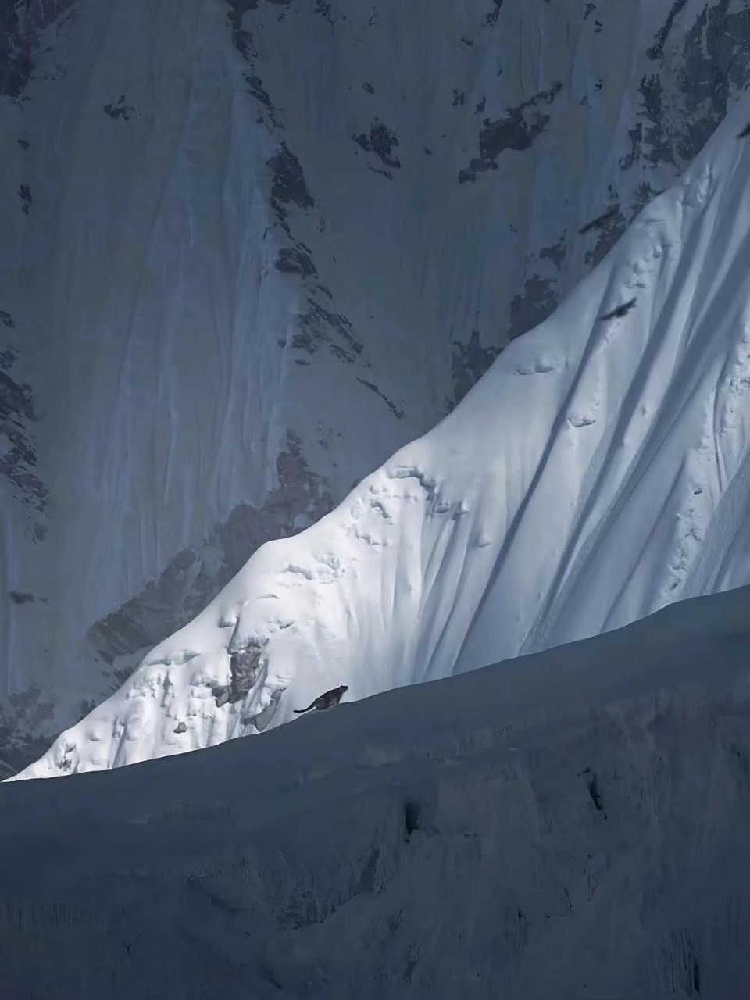
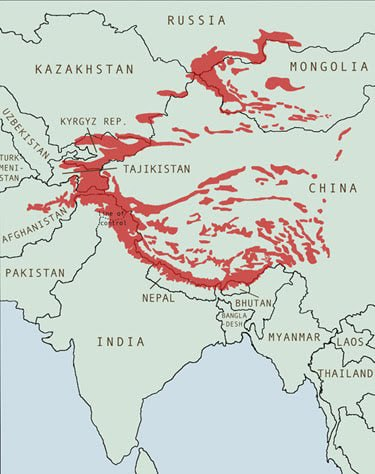

Вміст вкладки 1
Варіант 0
Тема: CSS

Ірбіс, або сніговий барс, — один із найзагадковіших хижаків планети. Він живе високо в горах Центральної та Південної Азії, на висоті від 3000 до 4500 метрів, де взимку панують сильні морози. На цьому знімку тварина майже губиться на тлі гігантського снігового схилу, і саме тому зустріти ірбіса в природі так складно. Його густе сіро-біле хутро з темними плямами ідеально маскує на каменях і снігу. Довгий хвіст, що сягає майже метра, допомагає тримати рівновагу на крутих кручах і гріє, коли ірбіс загортається в нього під час відпочинку. Ці коти ведуть самотній спосіб життя, не вміють рикати, а їхні стрибки здивують будь-кого. Сьогодні ірбіс належить до видів, що перебувають під загрозою зникнення, тому його охороняють у багатьох країнах.
Вміст вкладки 1
Вміст вкладки 2
Вміст вкладки 3
